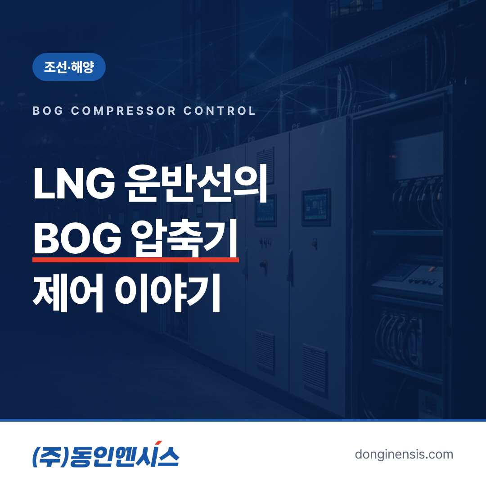
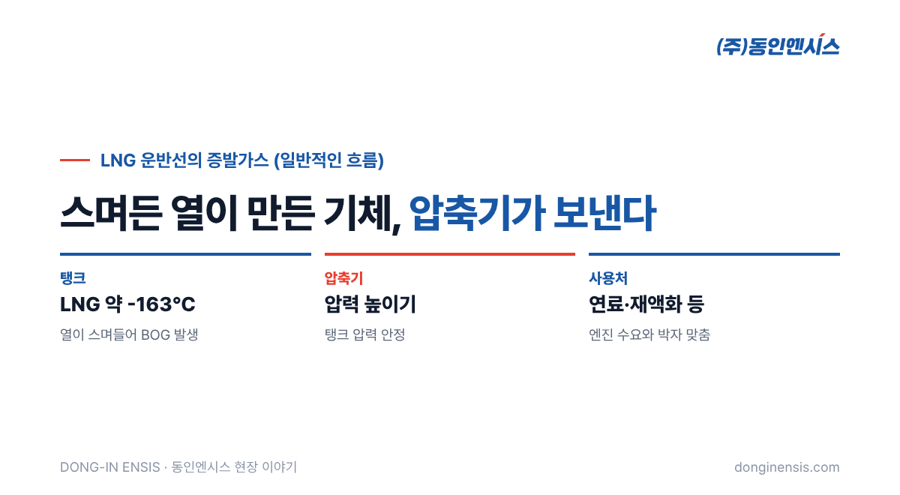
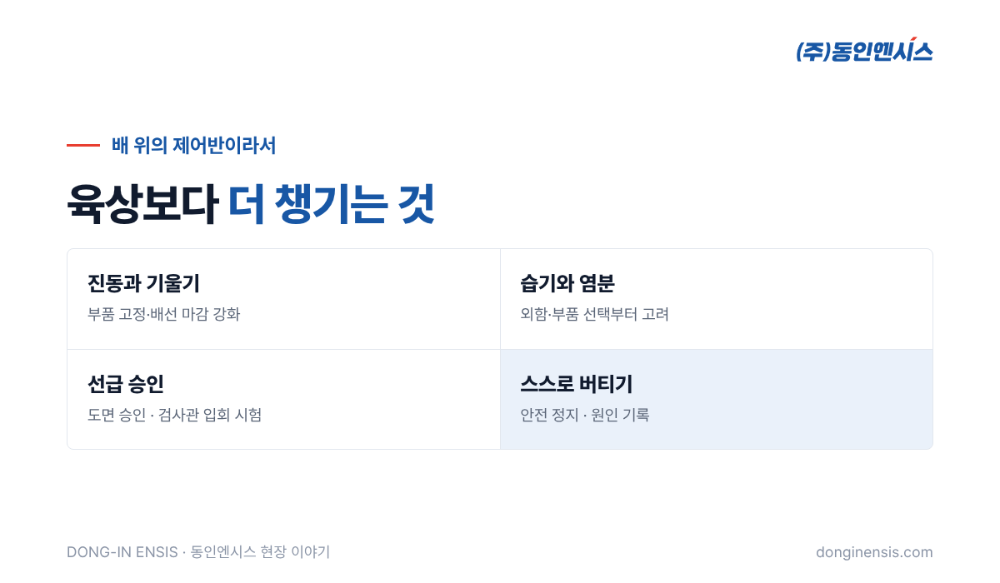

LNG 운반선은 영하 160도 아래로 차갑게 식힌 액화천연가스를 싣고 바다를 건넙니다. 아무리 단열을 잘해도 바깥의 열은 조금씩 탱크 안으로 스며들고, 그 열 때문에 LNG 일부가 끓어 기체가 됩니다. 이 기체를 BOG(Boil-Off Gas)라고 부릅니다. BOG를 그대로 두면 탱크 압력이 오르기 때문에, 배는 항해 내내 이 가스를 꺼내 처리해야 합니다. 귀한 화물이 조금씩 기체로 바뀌는 셈이니, 버리지 않고 쓸모 있게 쓰는 것도 중요한 과제입니다. 그 중심에 있는 설비가 BOG 압축기입니다. 부산에서 배와 공장의 제어반을 만들어 온 동인엔시스는 이 압축기의 제어를 두 차례 맡았습니다. 하나는 Atlas Copco의 LNG 밸류체인용 압축기 제어 엔지니어링, 다른 하나는 SB선보의 LNG 운반선용 압축기 제어 설계·공급·시운전입니다. 이 경험을 바탕으로 BOG 압축기 제어가 어떤 일인지 이야기해 보겠습니다.
LNG는 대기압에서 약 영하 163도의 아주 낮은 온도로 액체 상태를 유지합니다. 탱크를 아무리 잘 감싸도 주변보다 훨씬 차갑기 때문에 열이 들어오는 것을 완전히 막을 수는 없습니다. 들어온 열만큼 LNG가 기체로 바뀌고, 그 기체가 쌓이면 탱크 압력이 올라갑니다.
그래서 BOG는 일정하게 꺼내 어딘가로 보내야 합니다. 일반적으로는 배를 움직이는 엔진의 연료로 쓰거나, 다시 차갑게 만들어 액체로 되돌리거나, 필요한 경우 안전하게 처리하는 길이 있습니다. 어느 쪽이든 기체를 원하는 곳으로 보내려면 압력을 높여야 하고, 이 일을 BOG 압축기가 맡습니다. 압축기가 멈추면 탱크 압력을 다스릴 수단이 줄어드는 셈이라, 배에서 매우 중요한 설비입니다.

BOG 압축기를 제어한다는 것은 단순히 압축기를 켜고 끄는 일이 아닙니다. 일반적으로 다음 세 가지를 동시에 지켜야 합니다.
가장 중요한 목표는 탱크 압력을 정해진 범위 안에 두는 것입니다. 압력이 오르면 더 많이 꺼내고, 내려가면 덜 꺼내야 합니다. 그런데 BOG가 생기는 양은 날씨와 바다 상태, 탱크에 실린 양에 따라 계속 달라집니다. 짐을 가득 실은 항해와 짐을 내린 뒤의 귀항 항해에서도 사정이 다릅니다. 제어 시스템은 이 변화를 따라가며 압축기의 처리량을 조절합니다.
BOG를 엔진 연료로 쓰는 배라면, 엔진이 필요로 하는 양과 압축기가 보내는 양이 맞아야 합니다. 배가 속도를 바꾸면 엔진의 연료 수요가 달라지고, 압축기 운전도 그에 맞춰 바뀌어야 합니다. 탱크 쪽의 사정과 엔진 쪽의 사정을 함께 보며 균형을 잡는 것이 BOG 압축기 제어의 핵심입니다. 어느 한쪽만 보고 움직이면 다른 쪽이 흔들리기 때문에, 두 값을 동시에 읽고 판단하는 로직을 프로그램에 담습니다.
압축기는 무리한 조건에서 돌면 손상될 수 있습니다. 흡입 쪽 압력과 온도가 정해진 범위를 벗어나거나, 윤활과 냉각에 문제가 생기면 운전을 제한하거나 멈춰야 합니다. 이런 조건을 인터록으로 걸어 두어, 사람이 미처 보지 못한 순간에도 설비가 스스로를 지키게 합니다. 좋은 BOG 압축기 제어는 잘 돌리는 것만큼 언제 멈출지를 정확히 아는 제어입니다.
LNG 밸류체인은 LNG를 만들고, 옮기고, 저장하고, 쓰는 전 과정을 말합니다. 동인엔시스는 Atlas Copco의 이 분야 압축기 제어 엔지니어링에 참여했습니다. 압축기 제조사가 요구하는 운전 조건과 보호 조건을 제어 설계로 옮기는 일이 중심이었습니다.
SB선보의 LNG 운반선 프로젝트에서는 설계부터 제어반 공급, 시운전까지를 맡았습니다. 도면을 그리는 데서 끝나지 않고, 실제 제어반을 만들어 배에 싣고, 압축기를 돌려 보며 맞추는 단계까지 이어진 일입니다. 설계 때 예상한 동작과 실제 압축기가 반응하는 모습 사이의 작은 차이를 시운전에서 하나씩 맞춰 가는 과정이 가장 손이 많이 가는 부분입니다.
두 현장의 세부 사양은 고객사 정보라 여기서 다루지 않지만, 공통점은 분명합니다. 한쪽은 설계 쪽에, 다른 한쪽은 제작과 현장까지 무게가 실린 일이었지만, 어느 쪽이든 압축기가 처한 조건을 정확히 이해하는 것이 출발점이었습니다. 압축기 제조사의 기준과 선박이 요구하는 기준을 동시에 만족시키는 제어를 만들어야 했다는 점입니다.
Photorealistic wide photo of a large LNG carrier ship with spherical-free membrane-type flat deck and cargo dome structures sailing on calm blue sea under a clear sky, seen from a slight elevation, no visible ship name, no brand logos, no readable text. 3:2 landscape.
BOG 압축기 제어를 맡는 제어반은 바다 위에서 일합니다. 그래서 육상 제어반보다 챙길 것이 많습니다.

결국 이 일은 압력과 온도, 유량을 계속 읽고, 조건이 맞을 때만 움직이며, 이상이 생기면 정해진 순서로 멈추는 일입니다. 동인엔시스는 LNG 연료를 엔진에 공급하는 FGSS 설비의 펌프·히터 제어, 하이브리드 추진선의 통합제어감시, 수소추진선박 실증까지 바다 위의 까다로운 현장을 이어 왔습니다.
이런 현장에서 몸에 밴 습관, 즉 설비의 상태를 정확히 읽고 믿을 수 있게 남기는 습관은 지금 지능형 제어반이 만드는 설비 데이터의 바탕이 되고 있습니다. 배 위의 엄격함이 육상 공장의 데이터 품질로 이어지는 셈입니다.
Photorealistic photo inside a ship's machinery room: a robust light-grey marine control cabinet with a small touchscreen and indicator lamps mounted on a steel bulkhead next to large insulated gas pipes and a compressor unit, yellow handrails, cool fluorescent light, a Korean engineer in a navy coverall checking the screen, no brand logos, no readable text. 3:2 landscape.
Q. 압축기 제어반도 선급 승인을 받나요? 선박에 실리는 제어반은 선박별로 도면 승인과 검사관 입회 시험을 거칩니다. 적용 선급과 요구 사항은 선박마다 확인합니다.
Q. 압축기 제조사가 정한 제어 조건은 어떻게 반영하나요? 제조사가 요구하는 운전·보호 조건을 설계 단계에서 확인하고, PLC 프로그램과 인터록으로 옮긴 뒤 시운전에서 함께 검증합니다.
Q. 육상 LNG 설비도 할 수 있나요? LNG 밸류체인용 압축기 제어 엔지니어링 경험이 있으며, 현장 조건을 듣고 적용 가능성을 함께 검토합니다.
BOG는 LNG를 싣고 다니는 한 피할 수 없는 기체이고, BOG 압축기는 그 기체를 쓸모 있게 바꾸는 설비입니다. 동인엔시스는 그 압축기가 바다 위에서 안전하게, 쉬지 않고 일하도록 제어하는 일을 맡아 왔습니다.
선박 제어 상담 051-862-3668 · dongin@donginmne.com
아래 질문 중 하나에 실제 경험으로 답해 본문 적당한 곳에 넣어 주세요. 사람이 직접 쓴 문장이 들어가면 네이버에서 저품질 위험이 줄고 노출에 도움이 됩니다.